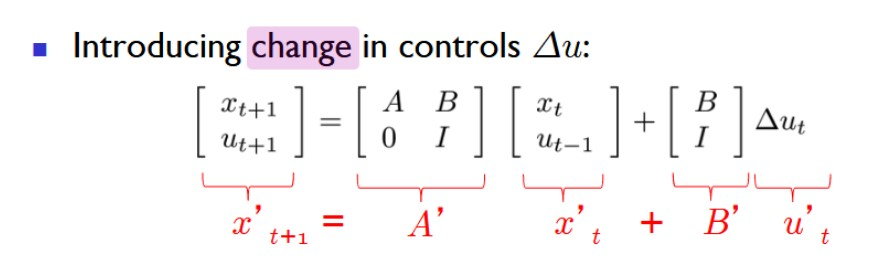
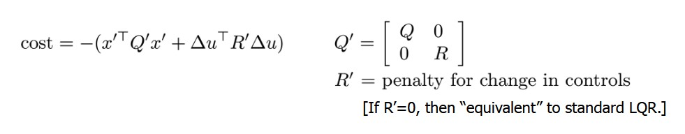
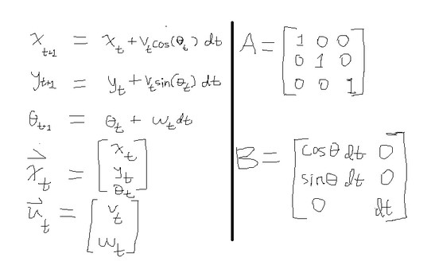
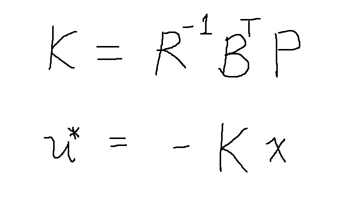

Linear Quadratic Regulator for Differential Steering
(If you have seen my mecanum drive controller, you can skip this first section)
For my testbed project, I needed a method of controlling robots to follow their
respective paths. Controlling mobile robots in the context of motion planning is
essentially an issue of trajectory tracking. I opted to implement linear quadratic
regulators, a type of optimal feedback controller that is similar to the robust
MPC controllers used in self-driving cars. I designed two different discrete-time
LQR's to be used for differential and mecanum drive robots. This page will cover
my implementation of differential steering control.
Above is the state-space model and quadratic cost function for a discrete-time LQR, hence giving it the name 'linear quadratic regulator'. The vector x_t represents the current state of the system, u_t represents the control action at the given moment, and x_t+1 is the next state. The input matrix A alongside the control matrix B enables the control action to manipulate the state in the desired dynamical model. The cost function g is essentially the sum Qx^2 + Ru^2 that the LQR seeks to minimize. Since Q and R assign coefficients to the costs of the x and u squred terms, they punish the magnitude of the state and control action respectively: at every given time frame, the cost of controlling the system is weighed against the cost of the state to calculate the optimal control action. For our purposes,the LQR finds a balance between its deviation from its path and its velocity.
 However, my system dynamics yielded unwanted behaviors: the differential steering controller had unintended high-frequency outputs. To solve this, I re-formulated the linear model to account for past control actions within its state, thus controlling its change in velocities. The new state-space model can be seen above. One downside to this new model is that state estimation becomes more difficult—the controller now relies on both position and velocity feedback to be functional.
Shown above are the state variables, control vector, input matrix, and control matrix. The state vector is defined by the robot's x and y coordinates alongside its orientation as an angle. At a given moment, the next position of the robot is a function of its current position, current linear velocity, and current angle. Its next orientation is a function of its current angle and angular velocity. Intuitively, when driving an automobile we use the pedal and steering wheel to control the speed and turn rate. Similarly, linear and angular velocities are the inputs in this system, and thus define the control vector. The control and input matrices A and B are fairly straightforward: A poses the state vector as a square matrix, and B multiplies the control vector to allow it to appropriately add to the state.

Above is the discrete time algebraic Riccati equation, which helps solve for the optimal control policy that ties the linear state space with the quadratic cost function. By inputting coefficient matrices A, B, Q, and R into this formula, we can iteratively solve for P until a reasonable margin of error has been achieved.
The solution to the algebraic Riccati equation is used to calculate the optimal gain matrix K. The control policy is equal the state vector multiplied by this coefficient, which yields us an optimal control action at every time frame.
Above is a demonstration of the LQR tracking the trajectory of a Lissajous parametric curve. The code for the controller can be found here.